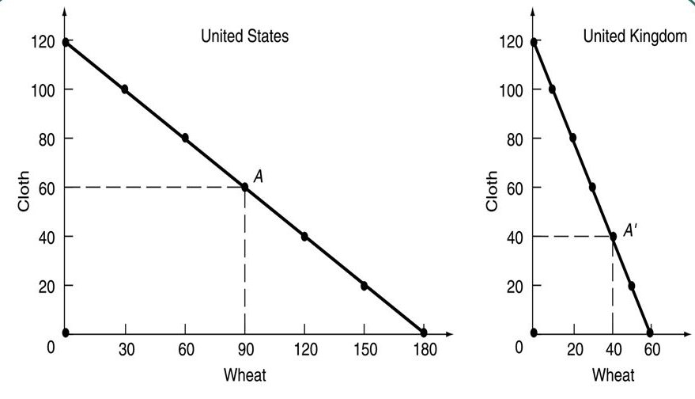
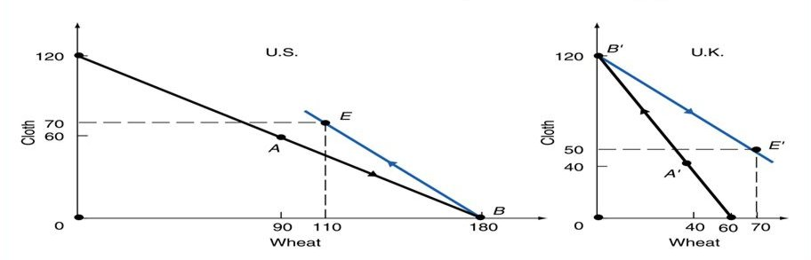

4 International Trade Models
4.1 Differences between absolute advantage and comparative advantage
| Absolute advantage | Comparative advantage | |
|---|---|---|
| Definition | Best at production of good or service | Production of good or service at lower cost |
| Benefits | Resources are focused on specific production | Resources are focused on efficient production, therefore, saving resources |
| Cost | Cost is noticed but not made priority over production | Cost is the primary factor to make production |
| Production | All resource allocation goes into production | Resource allocation varies and the main focus is not only production but also opportunity cost |
| Trade benefits | Trade is not mutually beneficial for two countries | Trade is mutually beneficial for two countries |
| Economic concept | Strategic management concept | Economic concept |
| Proponents | Adam Smith | David Ricardo |
4.2 The opportunity cost theory
According to the opportunity cost theory, the cost of a commodity is the amount of a second commodity that must be given up to release just enough resources to produce one additional unit of the first commodity.
The nation with the lower opportunity cost in the production of a commodity has a comparative advantage in that commodity.
For example, if in the absence of trade the United States must give up two-thirds of a unit of cloth to release just enough resources to produce one additional unit of wheat domestically, then the opportunity cost of wheat is two-thirds of a unit of cloth.
4.3 The Production Possibility Frontier (PPF) under constant costs
- Opportunity costs can be illustrated with the production possibility frontier, or transformation curve. The production possibility frontier is a curve that shows the alternative combinations of the two commodities that a nation can produce by fully utilizing all of its resources with the best technology available to it.
Table 3.4: Production possibility frontier of Wheat and Cloth production
| USA | UK | ||
|---|---|---|---|
| Wheat | Cloth | Wheat | Cloth |
| 180 | 0 | 60 | 0 |
| 150 | 20 | 50 | 20 |
| 120 | 40 | 40 | 40 |
| 90 | 60 | 30 | 60 |
| 60 | 80 | 20 | 80 |
| 30 | 100 | 10 | 100 |
| 0 | 120 | 0 | 120 |
Table 3.4 gives the (hypothetical) production possibility schedules of wheat (in million kg/year) and cloth (in million units/year) for the United States and the United Kingdom.
The United States and United Kingdom production possibility schedules given in Table 3.4 are graphed as production possibility frontiers in Figure 3.1. Each point on a frontier represents one combination of wheat and cloth that the nation can produce.

Figure 3.1: The Production Possibility Frontiers of the United States and the United Kingdom.
4.4 The Basis for and the Gains from Trade under Constant Costs
In the absence of trade, a nation can only consume the commodities that it produces. As a result, the nation’s production possibility frontier also represents its consumption frontier.
In the absence of trade, the United States might choose to produce and consume combination A (90W and 60C) on its production possibility frontier (see Figure 2.2), and the United Kingdom might choose combination A’ (40W and 40C).

Figure 3.2: The gains from trade In the absence of trade, the United States produces and consumes at A , and the United Kingdom at A’ . With trade, the United States specializes in the production of wheat and produces at B , while the United Kingdom specializes in the production of cloth and produces at B’ . By exchanging 70W for 70C with the United Kingdom, the United States ends up consuming at E (and gains 20W and 10C), while the United Kingdom ends up consuming at E’ (and gains 30W and 10C).
The increased consumption of both wheat and cloth in both nations was made possible by the increased output that resulted as each nation specialized in the production of the commodity of its comparative advantage.
4.5 The Ricardian model of international trade
The Ricardian model of international trade states that the main reason why countries trade is that different countries have different productivity (or technologies) for producing different goods and services.
It shows how countries can gain from exporting goods that they are relatively better at making and importing goods that they are relatively worse at making.
4.5.1 The Ricardian theory
The Ricardian theory of comparative advantage is based on the idea that if there are technological differences in the production of goods across countries,
Countries can gain from trade by exporting goods for which the country has a lower opportunity cost of production and importing goods for which the country’s opportunity costs of production are higher.
The model can be understood using a two-country, two-good and one factor of production example.
Suppose that the two countries are Home(\(h\)) and Foreign(\(f\)) and the two goods are Bread (\(b\)) and Cloth (\(c\)).
The lone factor of production is labor (\(L\)).
The production of one unit of each good in each country requires a certain amount of labor which is called the unit labor requirement.